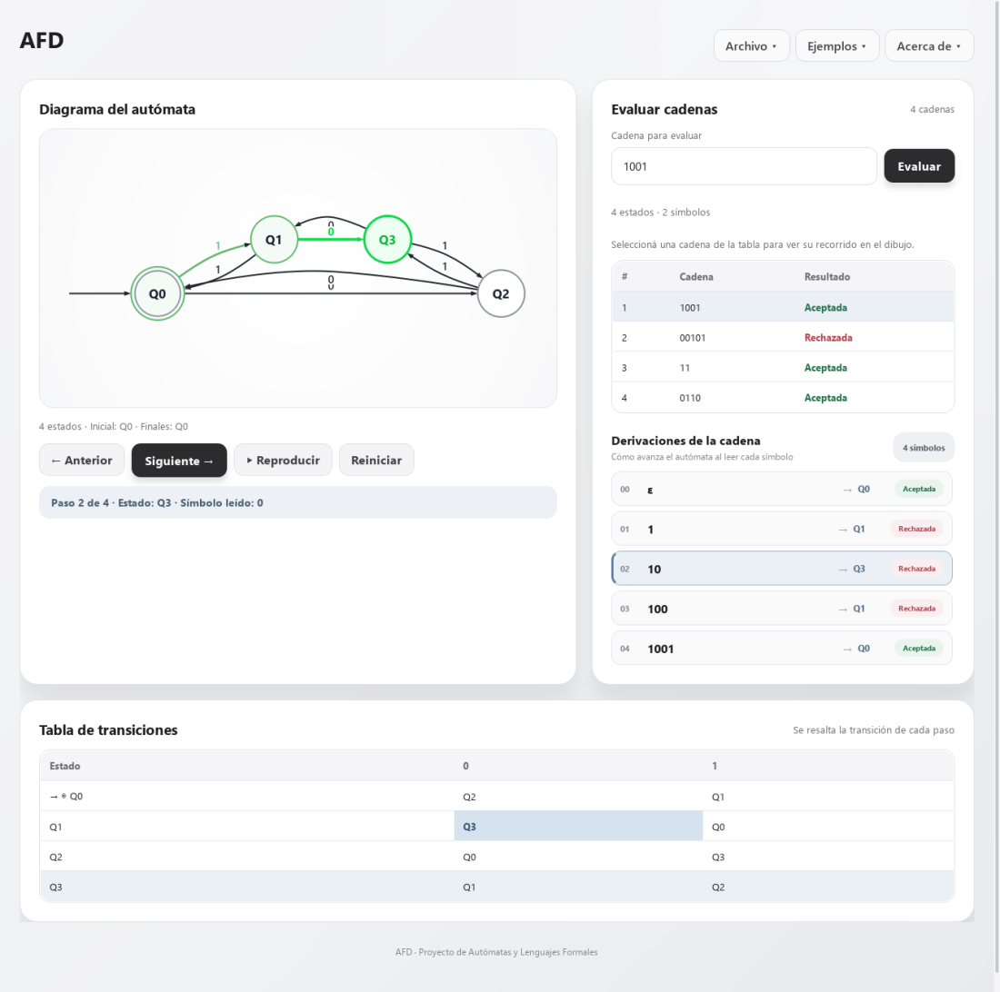
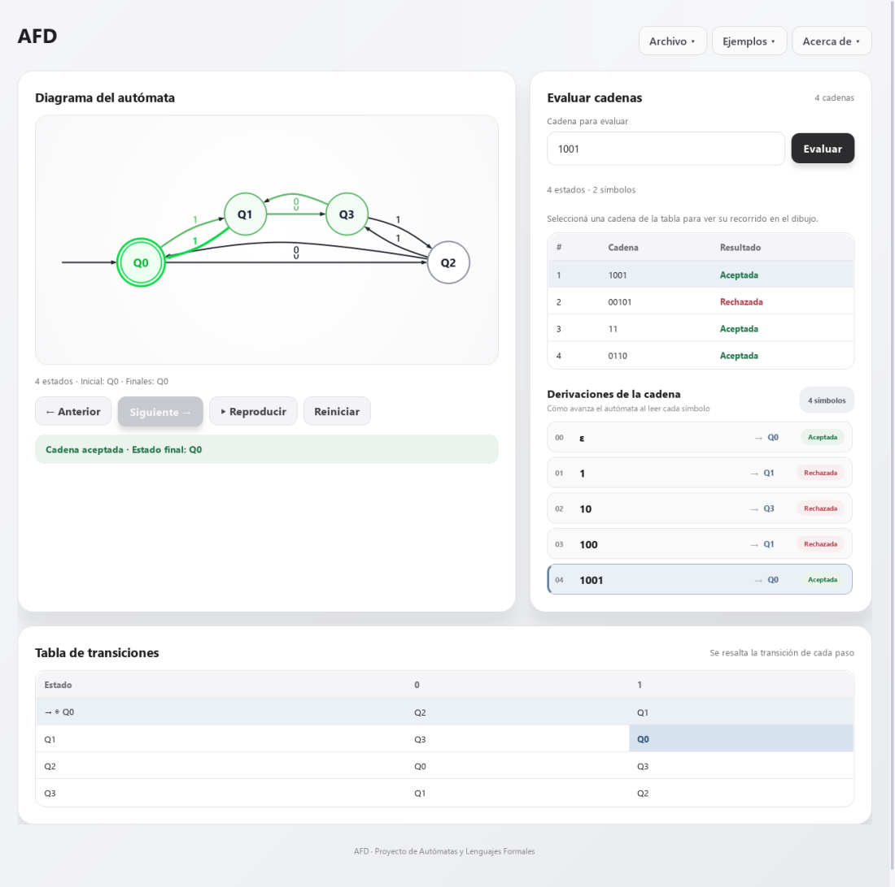
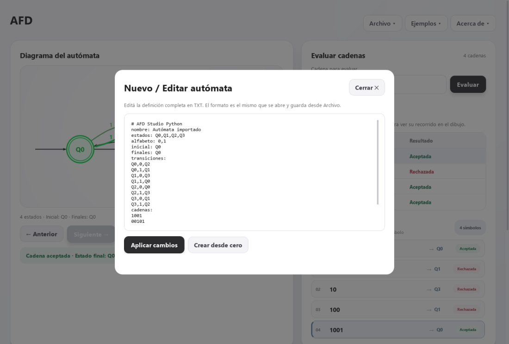

Simulador AFD
Simule paso a paso cómo un Autómata Finito Determinista lee cada símbolo, recorre sus estados y decide si acepta o rechaza una cadena.
Instalación
Tres pasos y queda listo en el menú Inicio y en el escritorio.
- Descargue el instalador con el botón Descargar para Windows.
- Ejecute Instalador_Simulador_AFD.exe y siga el asistente (Siguiente → Instalar).
- Abra la aplicación desde el escritorio o el menú Inicio: Simulador AFD.
¿Aparece «Windows protegió su PC»?
Es normal: Windows muestra ese aviso con los programas descargados de internet que no tienen firma digital comercial. El instalador es seguro.
- Haga clic en el enlace Más información.
- Presione el botón Ejecutar de todas formas.
- Continúe con la instalación normalmente.
Así se ve
El diagrama, la tabla de transiciones y la tabla de cadenas se actualizan en cada paso.



Funciones
Todo lo necesario para estudiar el comportamiento de un AFD.
Diagrama dinámico
Dibujo del AFD con Graphviz. El estado actual y la transición usada se pintan de verde en cada paso.
Tabla de transiciones
Se resaltan la fila del estado actual y la celda de la transición aplicada mientras avanza la simulación.
Tabla de cadenas
Cada cadena del archivo con su resultado: Aceptada o Rechazada, y el motivo cuando se rechaza.
Paso a paso
Controles Anterior, Siguiente, Reproducir y Reiniciar, con el símbolo leído y el estado en cada paso.
Abrir, crear y guardar
Cargue el AFD desde un archivo .txt, edítelo en pantalla y guárdelo para usarlo después.
Ejemplos y ayuda
Tres AFD de ejemplo listos en el menú, ayuda integrada y manual de usuario en PDF.
Formato del archivo de entrada
Un archivo de texto con símbolos, estados, estado inicial, estados de aceptación, transiciones y cadenas.
Simbolos: 0,1 Estados: Q0,Q1,Q2,Q3 Estado inicial: Q0 Estados de aceptacion: Q0 Transiciones: Q2,Q1 Q3,Q0 Q0,Q3 Q1,Q2 Cadenas a analizar: 1,0,0,1 0,0,1,0,1
Cada fila de Transiciones corresponde a un estado, en el orden de Estados, y cada columna a un símbolo, en el orden de Simbolos.
En el ejemplo, desde Q0 con 0 se pasa a Q2 y con 1 a Q1.
Use - cuando un estado no tenga transición con un símbolo. Las cadenas pueden escribirse separadas por comas (1,0,0,1) o juntas (1001).
El instalador incluye archivos de prueba en la carpeta ejemplos.
Equipo
Universidad Mariano Gálvez de Guatemala · Curso: Autómatas y Lenguajes Formales · Octubre de 2026
| Integrante | Carné |
|---|---|
| Roger Felipe Sosa Osorio | 1890-17-8391 |
| Ever Misael Lopez Perez | 1890-24-3260 |
| Vieri Alexander Ixtecoc López | 1890-23-3479 |
| Henry Leonel Perez Cruz | 1890-24-4996 |
| Edgar Emanuel Contreras Gaitan | 1890-17-17069 |
| Dennis Rodrigo Melgar Perez | 1890-24-9352 |